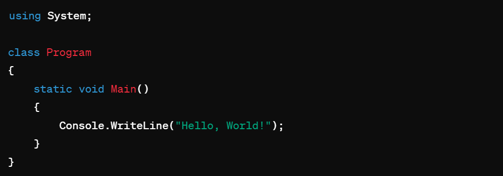
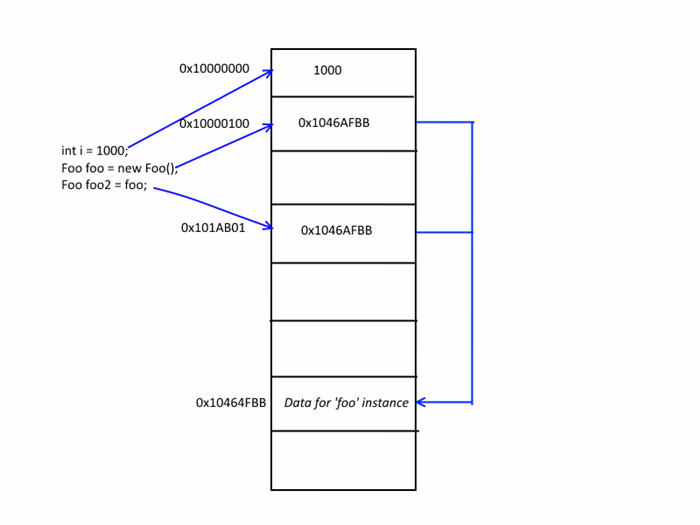
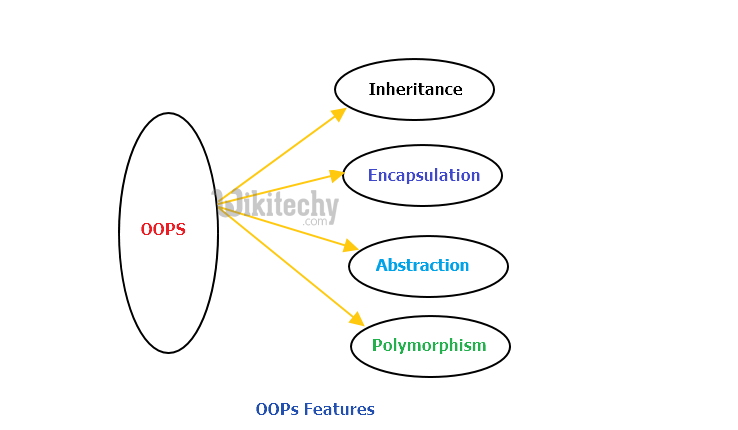

ការប្រើភាសា C# សម្រាប់ការរៀនគឺអាចចាប់ផ្ដើមដោយការស្រេចស្រាយសតិដោយធ្វើអនុវត្តន៍ការលើសពីគេហទំព័រដែលផ្តល់អំពីការស្រេចស្រាយសតិរបស់ C#។ នៅក្នុងភាសា C# ជាភាសាបង្ហាញផ្សេងៗនៃប្រព័ន្ធគណនេយ្យដែលជាស្រដៀងទៅនឹងប្រព័ន្ធគណនេយ្យផ្សេងទៀតដែលគេសិក្សាទៅក្នុងវិធីសាស្រ្តការកំណត់ផ្នែកចុងបច្ចេកទេសនិងការពិនិត្យឡើងវិញផងដែរ។ នៅទីនេះនិងមានប៊ូលុងលើកលេងដំបូងអំពីការរៀនរបស់ C# ជាការចាប់ផ្តើម:
ក្នុងលក្ខណៈប្រព័ន្ធដ៏ស្រដៀងទៅនឹង C# នេះ។ នេះជាលេខកូដដែលសំគាល់ថា "Hello, World!" ស្រេចស្រាយរបស់ C# ដោយប្រើអង្គភាព Console ដែលមានក្រាហ្វាម៉ាល់ស្កាល់។ ស្វែងយល់ពីប្រព័ន្ធនេះនៅពីទីនេះក្រោយពេលច្បាស់លាស់គឺជាការស្រេចស្រាយទៅលើទម្រង់របស់ C#។ ពេលសិក្សាអំពី C# ដោយសម្រាប់ការបង្កើតកម្មវិធីនិងការទំនាក់ទំនងជាច្រើននៃការរចនាសម្ព័ន្ធ។ អ្នកអាចស្រេចស្រាយប្រព័ន្ធដែលរចនាសម្ព័ន្ធរបស់អ្នកបានដោយប្រើកូដ C# ដើម្បីរៀនបន្តបន្ទាប់។
.jpg)
ការសរសេរកូដភាសា C# បង្ហាញដោយរបៀបដែលវាមាននៅក្នុងជំនាន់នៃកូដប្រភេទ C-style (C, C++, Java)។ សម្រាប់ការសរសេរកូដ C# សូមឧបករណ៍បណ្តាញនិងអ្នកសរសេរមិនដែលរឹងមាំ។ សូមមើលទៅក្នុងឧបករណ៍តំលៃដើម Microsoft Visual Studio ដើម្បីទិដ្ឋភាពសរសេរកូដ C#។ នៅទីនេះជាឧទាហរណ៍ប្រសិនបើអ្នកចង់ស្វែងយល់ពីសម្រាប់រក្សាអក្សរជាមុននឹងរក្សាអក្សរ។
using System;
class Program
{
static void Main()
{
// នៅទីនេះសរសេរសាមញ្ញចាប់ផ្ដើម
Console.WriteLine("Hello, World!");
// អ្នកអាចសរសេរកូដនៅទីនេះ
}
}
ក្នុងកូដ C#, "String" គឺជាប្រភេទទិន្នន័យដែលមានប្រភេទគឺជាប្រភេទតួអក្សរ (text)។ វាជាអក្សរដែលអាចត្រូវបានប្រើដើម្បីរក្សាទុកអត្ថបទឬពាក្យ។ ក្នុង C#, "String" ត្រូវបានបង្ហាញជាអក្សរតិចតួចដោយសញ្ញា double quotes ("") ឬតម្លៃសញ្ញារបស់ char ('')។
string myString = "សិក្ខាសាលារៀន";
Console.WriteLine(myString);
នៅលើដើម្បីយកប្រភេទនៃ String បានប្រើដោយរក្សាប្រភេទទិន្នន័យ "string"។ វាអាចរក្សាទុកអត្ថបទឬចំនួនទិន្នន័យដែលមានក្នុងវាបាន។ សម្រាប់បញ្ជីនៃសញ្ញារបស់ String ឬប្រភេទផ្សេងទៀតនៃសញ្ញា៖ Length: រកប្រវែងនៃ String។
string myString = "Hello, World!";
int length = myString.Length;
Console.WriteLine(length); // 13
string myString = "Hello, World!"; int length = myString.Length; Console.WriteLine(length); // 13
ប្រសិនបើស្រាវជ្រាវក្នុងការបង្កើតទិន្នន័យអក្សរឬធាតុទូទៅកាន់បច្ចុប្បន្ននិងកូដ JavaScript រួចការសាងសង់ទិន្នន័យនេះជាភាសាដែលប្រើប្រាស់ប្រភពនីមួយៗមានតម្លៃលេខលំនាំដូចនេះ: ភាសាតម្លៃ (Value Types): អត្ថបទ (String): ប្រើដើម្បីផ្តល់ឱ្យទិន្នន័យអក្សរ។ លេខ (Number): ប្រើដើម្បីផ្តល់ឱ្យទិន្នន័យលេខ។ ប៊ូលែ (Boolean): ប្រើដើម្បីផ្តល់ឱ្យទិន្នន័យត្រូវឬខុស។ null និង undefined: ប្រើដើម្បីផ្តល់ឱ្យទិន្នន័យដែលមិនត្រឹមត្រូវ។ អក្សរពាក់ព័ន្ធ (Object Types): បណ្តាញ (Object): ប្រើដើម្បីរុករកទិន្នន័យនិងលក្ខណៈនៃទិន្នន័យដែលចំណេះដឹងក៏គ្រប់គ្រងបាន។ អង្គត់ (Array): ប្រើដើម្បីរុករកតារាងទិន្នន័យ។ ប្រព័ន្ធ (Function): អនុគមន៍ (Function): ប្រើដើម្បីរុករកទិន្នន័យនិងទាញយកវា។ ទិន្នន័យអក្សរ (Symbol): អុករូប (Symbol): ប្រើដើម្បីបង្កើតបង្ហាញអត្ថបទនានា 
ក្នុង C#, "for loop" ជាម៉ាកសញ្ញាដែលមិនតែសម្រាប់ការរុករកទៅតាមអត្ថបទឬទិន្នន័យដែលមានជាតម្រូវការដោយមួយឬច្រើនដោយវាមានមួយឬច្រើនផ្នែក:
Initialization: បើយើងកំណត់អថេរ (variable) ឬរបារមាននៅលើសពីស្ថានភាពដែលបានគេបញ្ជាក់អំពីអត្ថបទឬទិន្នន័យ។ Condition: អថេរនៅក្នុងស្ថានភាពដែលត្រូវបន្តក្នុងម៉ាកតាមតំលៃផ្ទុយនៃអថេរប៉ុន្តែក្នុងករណីនេះយើងប្រើគួរតែត្រូវផ្ដល់តម្លៃ "true"។ ប្រសិនបើអថេរនៅក្នុងស្ថានភាពនោះត្រូវបានអាចពីរសម្រាប់បន្តឬបញ្ឈរជាបន្តឬដូច្នេះនឹងផុតពីរ។ Iteration: ជម្រើសអំពីវាបានរកឃើញឬដឹងពីវាដើម្បីរកបញ្ហាអំពីអថេរឬទិន្នន័យដើម្បីបង្ហាញ ឬដឹងពីតម្លៃនៅលើអថេរ ឬទិន្នន័យនោះទៀត។
Initialization: int i = 0; ដោយកំណត់អថេរ i ដែលមានតម្លៃបន្ថែមនៅលើ 0។ Condition: i < 5; ដោយត្រូវប្រើតម្លៃនៃអថេរ i ដែលត្រូវបានកំណត់ក្នុង initialization។ ប្រសិនបើតម្លៃនៃ i មិនតូចជាង 5 នោះវាគួរតែបញ្ចូលទៅក្នុង "for loop"។ Iteration: i++ ដោយគ្រាន់តែការបន្ថែមតម្លៃនៃអថេរ i ដោយ 1 ក្នុងមួយវេន។ នៅក្នុងឧទាហរណ៍នេះដើម្បីទស្សន៍បញ្ហារបស់ "for loop" នេះដែរថា វានឹងបញ្ចូ
ក្នុងភាសា C#, វាជាចំនួននៃទិន្នន័យដែលអាចត្រូវបានផ្ទុកក្នុងមួយវេន។ អ្នកអាចប្រើវាសម្រាប់រក្សាទុកទិន្នន័យដូចជា ចំនួនគត់, អក្សរ, ស្មុគស្មាញ, ប្រភេទទិន្នន័យ, និងអ្វីដែលអ្នកចង់ប្រើប្រាស់ទៀត។ បន្ទាប់ពីបង្កើតអថេរ (variable) អ្នកអាចប្រើវាសម្រាប់ផ្ទុកតម្លៃ និងទិន្នន័យផ្សេងគ្នានៅពេលក្រោយ។ ទាញយកឧទាហរណ៍:
// បង្កើតអថេរតួអក្សរមួយ char[] vowels = { 'a', 'e', 'i', 'o', 'u' }; // បង្កើតអថេរតួអក្សរមួយដោយត្រឹមត្រូវ char[] consonants = new char[6]; consonants[0] = 'b'; consonants[1] = 'c'; consonants[2] = 'd'; consonants[3] = 'f'; consonants[4] = 'g'; consonants[5] = 'h'; // បង្ហាញប្រភេទតួអក្សរ Console.WriteLine("Vowels: " + new string(vowels)); Console.WriteLine("Consonants: " + new string(consonants));
ក្នុងឧទាហរណ៍នេះ, យើងបានប្រើតម្រូវតែតម្លៃតួអក្សរ (characters) ជាប្រភេទតួអក្សរ។ ការប្រើប្រាស់ទិន្នន័យផ្សេងៗដូចជាលេខ, ស្លាក, ជួរដេក, ឬប្រភេទទិន្នន័យដែលមិនមែនជាប្រភេទតួអក្សរត្រូវបានផ្ទៀងផ្ទាត់ដោយសញ្ញាត្រង់ចំពោះគល់ទៅនឹងការប្រកួតឡើង។ បើយើងមិនដឹងពីប្រភេទតួអក្សរត្រូវបានប្រើប្រាស់ទេ, យើងគួររក្សាទុកលក្ខណៈនិងការប្រើប្រាស់នៃអាជ្ញាធរតួអក្សរដូចខាងក្រោម។
// ប្រើប្រាស់ int ដោយប្រើ Array int[] numbers = { 1, 2, 3, 4, 5 }; // ប្រើប្រាស់ string ដោយប្រើ Array string[] names = { "John", "Jane", "Bob", "Alice" }; // ប្រើប្រាស់ double ដោយប្រើ Array double[] prices = { 1.99, 2.49, 0.99, 4.99 }; // ប្រើប្រាស់ bool ដោយប្រើ Array bool[] flags = { true, false, true, false };
កូដដែលត្រូវបានរក្សាបានជាមួយនឹងអក្សរ "OOP" សំខាន់បំផុតរបស់វិទ្យាសាស្ត្រភាសា "Object-Oriented Programming"។ OOP ជាម៉ូឌុលអន្តរគមន៍ដែលត្រូវបានប្រើដើម្បីរក្សាកូដនូវច្បាប់និងរបៀបដោះស្រាយបញ្ហាផ្សេងៗ។ ក្នុងភាសា C#, OOP គឺរួមមានប្រភេទទិន្នន័យមួយផ្សេងទៀតហើយ។ ទូទៅនៅក្នុង OOP, យើងស្ថិតក្នុងប្រភេទទិន្នន័យស្របនឹង "អថេរ" (Objects) និង "បណ្ដាញ" (Classes)។ អថេរ (Objects): អថេរគឺជាធាតុក្នុងប្រភេទទិន្នន័យដែលបានបង្កើតឡើងដោយប្រើប្រាស់ពហុជា "បុគ្គល" ឬ "វិទ្យា"។ បើយើងសរសេរកូដដូចខាងក្រោម:
class Car { public string Model; public string Color; public int Year; public void Start() { Console.WriteLine("The car is starting."); } public void Stop() { Console.WriteLine("The car has stopped."); } } class Program { static void Main() { Car myCar = new Car(); myCar.Model = "Toyota"; myCar.Color = "Blue"; myCar.Year = 2022; myCar.Start(); myCar.Stop(); } }
នោះទោះបីជា "Car" គឺជាអថេរមួយដែលបង្កើតឡើងដោយប្រើប្រាស់របស់យើង។ បណ្តាញ (Classes): បណ្តាញគឺជាគណនាដែលដើម្បីបង្កើតឡើងនូវច្បាប់និងប្រភេទទិន្នន័យនិងជំនាន់ក្រុមទិន្នន័យដើម្បីរក្សាទុករួចគ្នា។
class Car { public string Model; public string Color; public int Year; public void Start() { Console.WriteLine("The car is starting."); } public void Stop() { Console.WriteLine("The car has stopped."); } } class Program { static void Main() { Car myCar = new Car(); myCar.Model = "Toyota"; myCar.Color = "Blue"; myCar.Year = 2022; myCar.Start(); myCar.Stop(); } }
javaScript W3School